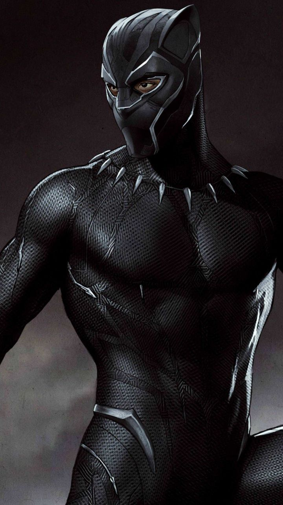

Black Panther is a fictional character appearing in American comic books
published by Marvel Comics. The character was created by writer-editor
Stan Lee and artist-coplotter Jack Kirby. The character first appeared
in Fantastic Four #52 (cover-dated July 1966) in the Silver Age of Comic
Books. Black Panther's real name is T'Challa, and he is depicted as the
king and protector of the fictional African nation of Wakanda. Along
with possessing enhanced abilities achieved through ancient Wakandan
rituals of drinking the essence of the heart-shaped herb, T'Challa also
relies on his proficiency in science, rigorous physical training,
hand-to-hand combat skills, and access to wealth and advanced Wakandan
technology to combat his enemies.

Black panther in black vibrenium suit
Origin and early stories
Seeking to address the dearth of Black characters in comics, Lee and
Kirby created T’Challa, a member of the royal family of the fictional
African country of Wakanda. Wakanda was depicted as a peculiar mix of
futuristic technology and traditional life, a dichotomy produced by the
presence in the country of Vibranium, a rare and nearly indestructible
meteoric ore. After the death of his father at the hands of the
villainous Ulysses Klaw, T’Challa claimed the throne as well as the
mantle of the Black Panther. Upon becoming the Black Panther, T’Challa
was exposed to a mystical herb that enhanced his strength and agility to
near-superhuman levels. After meeting the Fantastic Four, T’Challa
decided his powers would be put to best use in the service of all
humanity, although Wakanda traditionally had been closed to the outside
world, and so he flew off to New York, leaving his people behind.
The Black Panther joined the Avengers in 1968, where he became a
mainstay for the next several years. Although the character predated the
revolutionary political organization of the same name, Marvel briefly
changed the Black Panther’s name to the Black Leopard in an attempt to
dissociate the two. A short time later he was back to being the Black
Panther again, and in 1973 he headlined his own book for the first time.
The “Panther’s Rage” story arc ran for two years in Jungle Action, a
series written by Don McGregor and drawn for the most part by the
African American artist Billy Graham. Reflecting the times’ interest in
African roots and Black consciousness in general, the strip returned
T’Challa to a Wakanda riven by infighting and sedition, where he managed
to balance superheroics with musings on colonialism and democracy. For
the duration of the tale, the strip featured an all-Black cast,
something that had never before been attempted in mainstream superhero
comics, and the innovations continued in a later story, which saw the
Panther take on the Ku Klux Klan.
Poor sales prompted Marvel to cancel Jungle Action before the Klan story
was finished, and it was replaced in 1977 with a new Black Panther title by Jack
Kirby. This new direction was as far from the gritty realism of McGregor’s tales
as it is possible to imagine, as it featured a time-traveling frog statue said
to belong to King Solomon, the Yeti, and a group of Wakandan nobles known as the
Black Musketeers. This title too was short-lived. Sporadic appearances over the
next two decades kept the Black Panther in the Marvel firmament, but he was
increasingly marginalized. Miniseries in 1988 and 1991 were solid, if unspectacular,
attempts at revitalizing what was effectively a lapsed franchise. The first tackled
apartheid, and the second dealt with the Panther’s search for his mother, but neither led to
anything substantial. With Black characters no longer a comics novelty and with role
models such as the characters of Milestone Comics—which had more relevance to their
readers than a wealthy African king—it seemed as if the Panther’s time had passed.